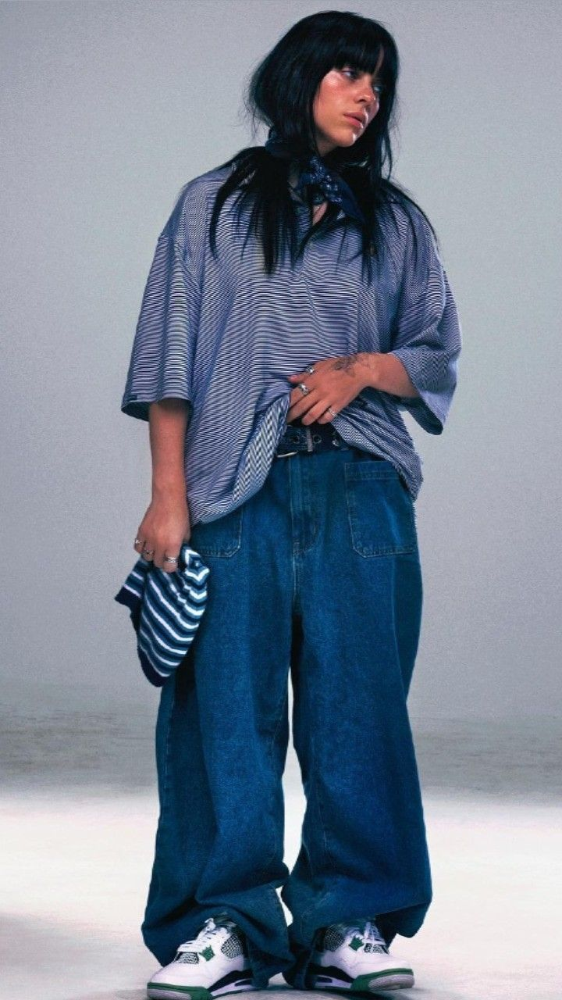
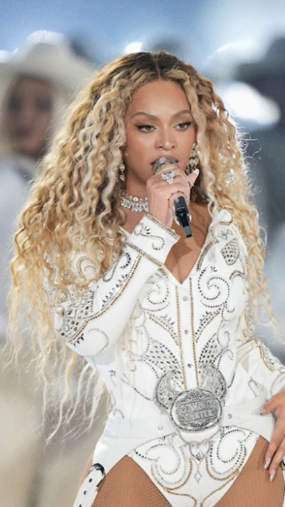
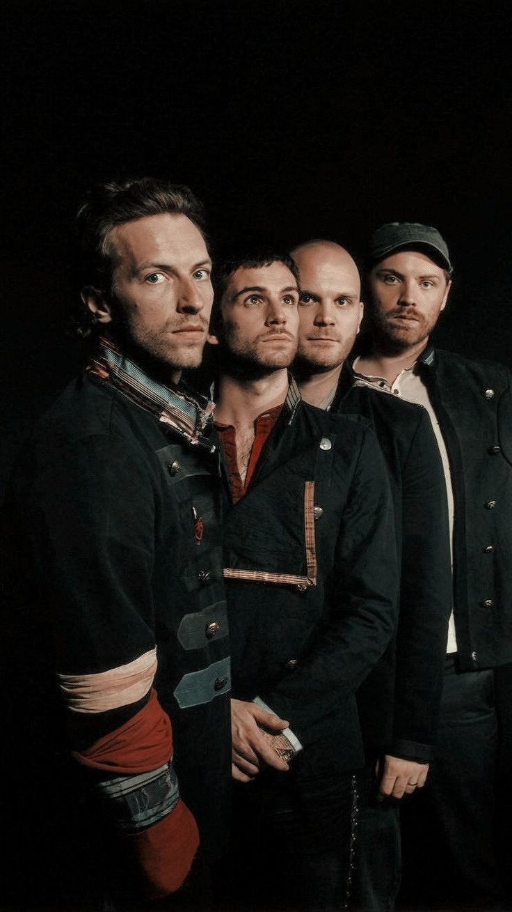

La musique anglophone occupe une place incontournable dans le paysage culturel mondial. Des voix puissantes, des textes poignants, des styles variés allant de la pop au rock, en passant par le R&B, le rap ou encore la soul : les artistes anglophones ont marqué des générations entières et continuent d'inspirer des millions de fans à travers le monde. Dans cette section, nous mettons en lumière ceux dont les morceaux rythment notre quotidien, dont les paroles résonnent avec nos émotions, et dont le talent traverse les frontières. Découvrez nos coups de cœur, nos légendes et nos révélations musicales anglophones.
Billie Eilish s’est imposée comme une figure incontournable de la scène musicale internationale dès son plus jeune âge. Avec son style unique mêlant pop, électro et ambiances sombres, elle a su captiver un public mondial grâce à des titres comme bad guy, when the party’s over ou encore Happier Than Ever. Révélée à seulement 14 ans, Billie ne cesse de repousser les limites artistiques, tant par sa musique que par son esthétique visuelle et sa personnalité authentique.
 LUNCH - Billie EilishIcône mondiale de la musique, Beyoncé est bien plus qu’une artiste : c’est une véritable légende vivante. Depuis ses débuts avec Destiny's Child jusqu’à sa carrière solo couronnée de succès, elle enchaîne les hits emblématiques comme Crazy in Love, Halo, Formation ou Break My Soul.
 Beyoncé au Super BowlDua Lipa s’est imposée comme l’une des figures montantes de la pop internationale. Originaire de Londres, elle a conquis le monde avec sa voix profonde, son style rétro-futuriste et ses hits électrisants.
 Illusion - Dua Lipa
Illusion - Dua Lipa
Artiste complet au groove irrésistible, Bruno Mars enflamme la scène avec son énergie débordante et ses hits ultra-entraînants.
 Uptown Funk - Bruno Mars & Mark Ronson
Uptown Funk - Bruno Mars & Mark Ronson
Ancien membre du groupe One Direction, Harry Styles a su s’imposer comme un artiste solo à part entière.
 Watermelon Sugar - Harry styles
Watermelon Sugar - Harry styles
Avec sa guitare et ses textes sincères, Ed Sheeran est devenu l’un des auteurs-compositeurs les plus influents de la pop contemporaine.
 Azizam - Ed Sheeran
Azizam - Ed Sheeran
Coldplay est l’un des groupes les plus influents de la scène pop-rock mondiale.
 Hymn For The Weekend - ColdplayOne Direction est un boys band britannique-irlandois formé en 2010 à l’issue de l’émission The X Factor.
 What Makes You Beautiful - One direction
What Makes You Beautiful - One direction
Originaire de Las Vegas, Imagine Dragons s’est imposé comme l’un des groupes les plus dynamiques de la scène alternative rock moderne.
 Eyes Closed (Live) - Imagine Dragons
Eyes Closed (Live) - Imagine Dragons